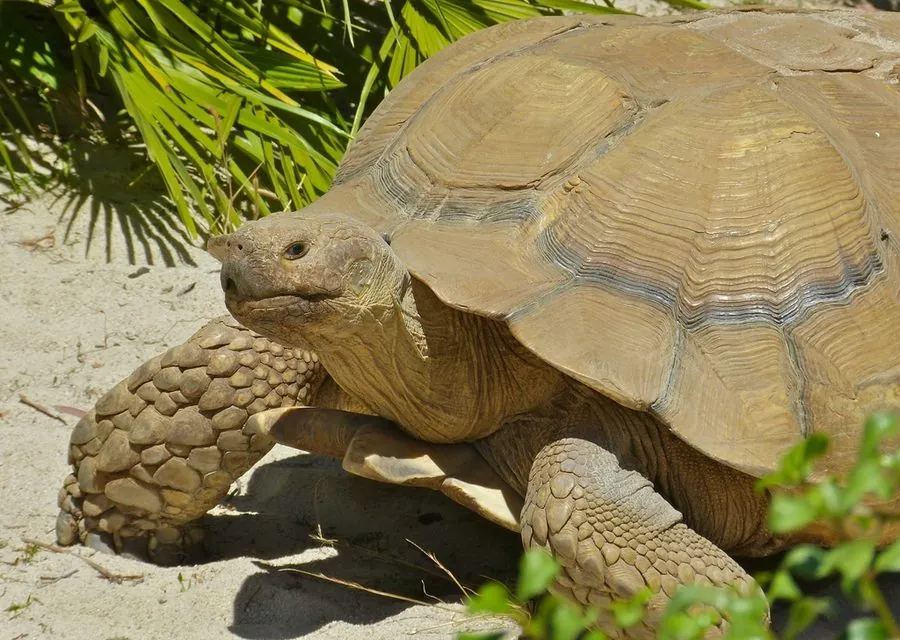

爬行动物 · 动物界
苏卡达陆龟 Centrochelys sulcata

非洲萨赫勒地区的大型陆龟，背甲黄褐色、四肢有粗大鳞刺，善于挖洞，是世界第三大陆龟，也是常见的宠物陆龟。
- 分类
- 门脊索动物门纲爬行纲目龟鳖目科陆龟科属苏卡达陆龟属
- 栖息环境
- 非洲萨赫勒地区的半干旱草原、荒漠边缘与沙地
- 地理分布
- 非洲萨赫勒地区，从塞内加尔到苏丹一带
- 保护级别
- IUCN 濒危（EN）；CITES 附录 II；非中国原产
物种志
苏卡达陆龟背甲长 60–80 厘米，体重可达 40–100 千克，是世界第三大陆龟。它的背甲高隆，呈黄褐或沙黄色，盾片上有明显的生长纹；四肢粗壮呈圆柱形，前肢外侧长有粗大的角质鳞刺，“盾臂龟”之名由此而来，头部较大，吻端钝。
它分布于非洲萨赫勒地区半干旱的草原和荒漠边缘，栖息于干燥的草地、灌丛和沙地，以青草、多汁植物和果实为食，会挖掘深洞躲避高温。每年繁殖季雌龟在沙地中产卵 15–30 枚，孵化期约 8–10 个月。由于宠物贸易和当地人捕食，野生苏卡达陆龟数量下降，被列为濒危物种并列入国际公约附录 II；它寿命长、体型大，饲养需要充足空间和专业条件，在中国属于外来物种，不可随意放生。
形态与习性
- 食性青草、多汁植物和果实
- 体长背甲长 60–80 cm
- 体重约 40–100 kg
- 寿命约 50–80 年
- 繁殖卵生，15–30 枚，孵化约 8–10 个月
趣味知识
- 苏卡达陆龟是世界第三大陆龟，仅次于加拉帕戈斯象龟和亚达伯拉象龟。
- 它前肢外侧的粗大鳞刺像盾牌，因此又叫“非洲盾臂龟”。
- 苏卡达陆龟善于挖洞，能在炎热的沙漠中躲避高温。